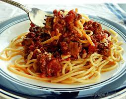

Home
Dad's Spaghetti

Description
Dad's spaghetti is a classic dish that your family is sure to love. It is
easy to make and great tasting!
Ingredients
- 1 pound spaghetti
- 2 pounds lean ground beef
- 1 onion, minced
- 1 (6 ounce) can tomato paste
- 2 (10.75 ounce) cans condensed tomato soup
- 2 ½ cups water
Directions:
- Bring a large pot of lightly salted water to a boil. Add pasta and cook until al dente; drain
- In a large skillet over medium heat, cook ground beef with onion until meat is brown.
Drain. Return meat mixture to pan with tomato paste, tomato soup, and water. Cook, stirring,
until heated through and thickened, 5-15 minutes. Serve over cooked pasta.